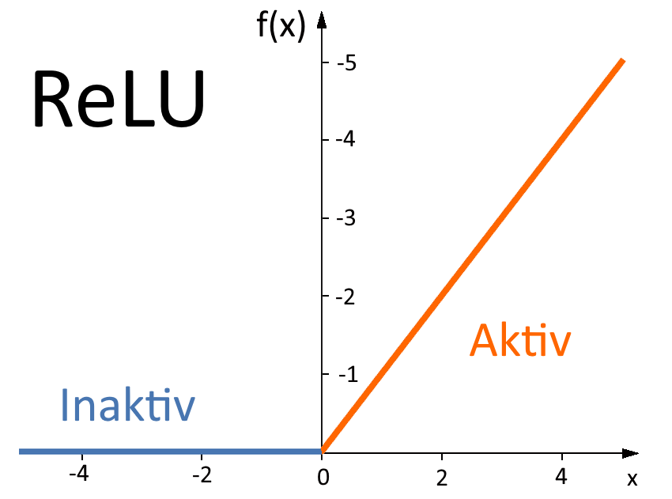
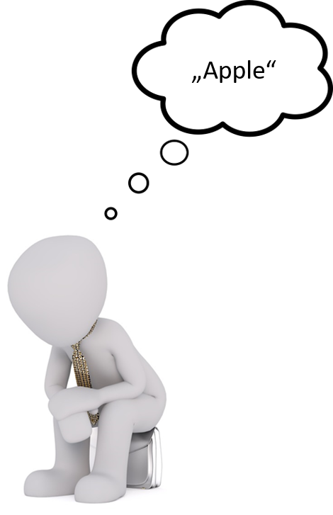
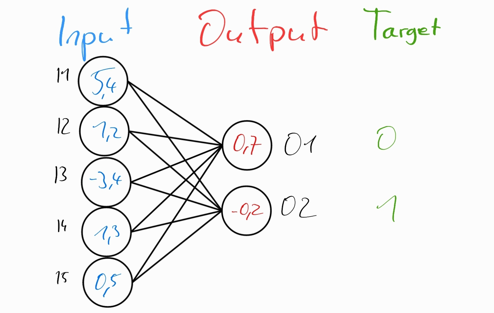
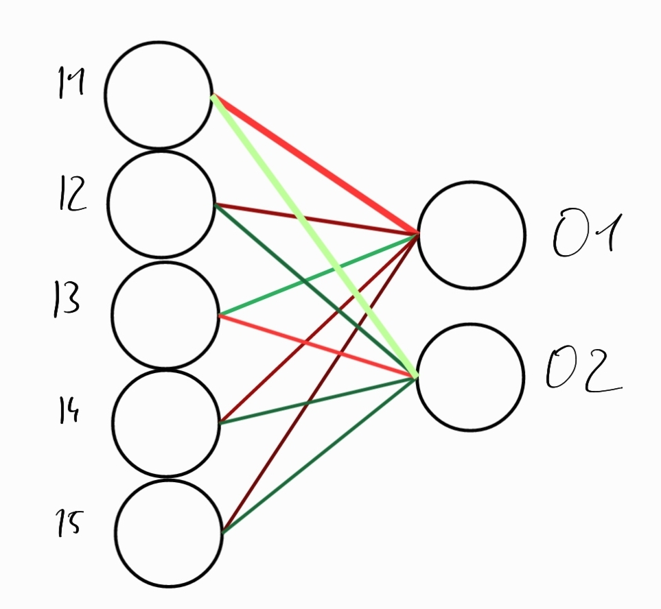

Vergleich von neuronalen Netzwerken mit dem menschlichen Gehirn
Aufbau eines neuronalen Netzwerkes
Hinweis: Hier wird sich auf eine Art von neuronalen Netzwerken beschränkt, anhand der sich Parallelen zum Gehirn gut erklären lassen. Das Gesagte trifft nicht auf jedes neuronale Netzwerk zu
Ein neuronales Netzwerk besteht, wie der Name erahnen lässt aus mehreren miteinander vernetzten Neuronen.
Hinweis: Neuronale Netzwerke bestehen in der Regel aus weitaus mehr Neuronen als hier dargestellt
Die Verbindungen zwischen den digitalen Neuronen entsprechen den biologischen Synapsen, die eigentlichen Neuronen allem anderem. Die Verbindungen besitzen einen Wert namens weight, der jede reelle Zahl sein kann. Neuronen haben 2 Werte, ihre activation(0.0-1.0) und ihre bias(ebenfalls jede reelle Zahl). Weight und bias werden durch den Lernprozess verändert, die activation ändert sich bei jeder Anwendung der Netzwerkes.
Die Neuronen sind in mehreren Schichten bzw. Layers angeordnet. Jedes Neuron hat eine Verbindung zu jedem anderen in den Layers davor und danach. Die erste Layer nennt man Input-Layer und die Letzte Output-Layer. Dazwischen können sich noch mehrere sogenannte hidden layers befinden, ein simples Netzwerk kann aber auch ohne hidden layers funktionieren.
Durch diesen Aufbau lässt sich das Reiz-Reaktions-Schema auch gut auf das neuronale Netzwerk anwenden. Der Reiz sind hier die Informationen, die der Input-Layer (dem Rezeptor) übergeben werden, also die activation aller Neuronen der Layer. Dieser Reiz wird dann durch die hidden layers weiter verarbeitet, die hier eine dem zentralen Nervensystem ähnliche Rolle annehmen. Die Output-Layer repräsentiert letztendlich den Effektor, die activations ihrer Neuronen sind die Reaktion. Diese activations können dann in den eigentlichen Output übersetzt werden, z.B. Bild, Text oder Audio.
Vom Input zum Output
Da der Input oft nicht ursprünglich aus Zahlen zwischen 0.0 und 1.0 besteht, wird der eigentliche Input in diese Form übersetzt. Bei einem Schwarz-Weiß-Bild kann z.B. die Helligkeit jedes Pixels als solch eine Zahl beschrieben werden. Für jeden Pixel muss es dann ein Neuron in der Input-Layer geben, das diesen Wert als activation zugewiesen bekommt.
Aus den activations der Input-Layer und den weights der Verbindungen werden dann die activations für die nächste Layer berechnet. So werden alle Layers nacheinander basierend auf der jeweils vorherigen Layer berechnet, bis man für die Output-Layer das Resultat erhält.
Wie funktioniert also diese Berechnung? Der Wert für jedes Neuron der Layer wird nacheinander aus jedem Neuron der vorherigen Layer und den weights der Verbindungen berechnet. Auch hier gibt es eine Ähnlichkeit zum biologischen Gehirn. Wenn an den Dendriten eines biologischen Neurons mehrere Aktionspotentiale gleichzeitig ankommen werden diese addiert (räumliche Summation). Das digitale Neuron erhält alle „Aktionspotentiale“ der vorherigen Layer zeitgleich und addiert diese.
Allerdings werden diese Potentiale mit den weights der jeweiligen Verbindung multipliziert, um die weighted sum zu erhalten. Wenn man diese Funktion auf den biologischen Kontext überträgt, wäre es so, als würden die einzelnen Synapsen verschieden gut leiten. Das ist im Gehirn aber nicht der Fall. Außerdem können die Werte dadurch negativ werden, was im menschlichen Gehirn nicht stattfindet.
Weil die weights zum einen größer als 1 und zum anderen negativ sein können, ist es möglich, dass das Ergebnis nicht zwischen 0 und 1, dem Wertebereich eines Neurons liegt. Deshalb wird der Wert mithilfe einer sogenannten activation-function in diese Reichweite übersetzt. Es gibt verschiedene solcher Funktionen, aber eine für dieses Thema besonders interessante ist ReLU. Hier besteht nämlich eine Analogie zum Alles-Oder-Nichts-Prinzip bei der Reizweiterleitung im Gehirn. Wenn die weighted sum negativ ist, ist die Aktivation des Neurons 0. Der Schwellenwert liegt hier also anders als in der Biologie bei 0.
Der Schwellenwert ist aber nur dann 0, wenn es keine bias gibt, bzw. diese nicht 0 ist. Die des Neurons wird zu der weighted sum addiert und verschiebt so den Schwellenwert für eine Aktivierung (eine positive Bias erleichtert die Aktivierung, eine negative erschwert sie).
Lernen bedeutet bei einem neuronalen Netzwerk nichts anderes als möglichst gute Werte für die einzelnen weights und biases zu finden.
Lernen
Wie das Gehirn lernt
Wie das Gehirn lernt ist nicht genau bekannt. Wir würden hier zum Projekt der Gruppe verweisen die sich damit befasst.
Eine weit verbreitete Theorie wie Verbindungen zwischen Neuronen im Gehirn verstärkt werden ist die Hebbian Theory. Sie besagt: „Neurons that Fire together wire together“. Das heißt, dass wenn Neuronen in kurzer Abfolge Nacheinander feuern, sich die Verbindungen zwischen ihnen Verstärken. Will man etwa das Wort „Apfel“ ins englische übersetzen, so wird das beim Ersten mal etwas dauern. Man stellt sich das so vor als würde zuerst das Neuron für das Konzept „Apfel“ aktiviert werden und dann über einen langen Umweg das Neuron für das Wort „Apple“.  Da das feuern des Apple-Neurons kurzzeitig auf das des Apfel-Neurons folgt, entsteht eine/verstärkt sich die Verbindung zwischen den beiden Neuronen. Diese Theorie wird besser hier auf Wikipedia erklärt. Diese Methode auf neuronale Netze anzuwenden hat jedoch nur teilweise Erfolg, deshalb wurden für neuronale Netze andere lern-Techniken entwickelt.
Neuroevolution
Die einfachste ist Evolution, auch bekannt als Neuroevolution. Bei dieser Technik werden mehrere Netze mit zufälligen Weights initialisiert. Dann wird getestet wie gut diese Modelle arbeiten und ihnen wird eine gewisse Punkteanzahl zugeteilt. Danach wird das beste Modell immer wieder leicht verändert kopiert um eine neue, bessere Generation zu erschaffen. Diese Netze werden dann wieder getestet usw. . Ein Beispiel solchen Lernens kann man hier sehen:

Gradient Descent
Hier wird das Modell anhand von vorher gesammelten Datenpaaren trainiert, dem Input und dem gewünschten Output. Ein Beispiel wäre hier wie ein Mensch über einen längeren Zeitraum Flappy Bird spielt.
Hinweis: Die volle Erklärung würde den Rahmen dieses Projektes sprengen, deshalb vereinfachen wir sie an vielen Stellen.
Wie es wirklich funktioniert
 Wenn man das Netzwerk zuerst zufällig initialisiert, werden die Werte nichts mit dem gewünschten Ergebnis zu tun
haben.
Während des Lernens wird für jedes Datenpaar berechnet wie weit die Ausgabe des Neuronalen Netzes für einen
gegebenen Input von dem gewünschten Output entfernt ist.
Dann werden die Weights so angepasst, dass das Ergebnis eher den gewünschten ähnelt.
In diesem Fall ist der Output kleiner als das gewünschte Ergebnis.
Wenn man das Netzwerk zuerst zufällig initialisiert, werden die Werte nichts mit dem gewünschten Ergebnis zu tun
haben.
Während des Lernens wird für jedes Datenpaar berechnet wie weit die Ausgabe des Neuronalen Netzes für einen
gegebenen Input von dem gewünschten Output entfernt ist.
Dann werden die Weights so angepasst, dass das Ergebnis eher den gewünschten ähnelt.
In diesem Fall ist der Output kleiner als das gewünschte Ergebnis. → Die Verbindung zwischen Input und Output wird verstärkt.
Bei mehreren Neuronen kann man sich das genauso vorstellen. Angenommen an einem bestimmten Zeitpunkt hat das Modell folgende Entscheidungen getroffen.  Die Verbindungen werden nun so angepasst, dass die gewünschte Entscheidung wahrscheinlicher wird. Grün für positive Veränderung, Rot für negative. 
Convolutional Neuronal Networks (CNN) - Rezeptives Feld
Hinweis: der Fokus liegt aufgrund des Vergleiches zum Auge nur auf der Bilderkennung
Rezeptives Feld:
Auf der Netzhaut befinden sich deutlich mehr Rezeptoren als Nervenfasern im Sehnerv. Deshalb müssen die Informationen schon an diesem Punkt verrechnet und interpretiert werden. Es werden, bevor Signale in das Gehirn gelangen schon vereinfachte Muster wie z.B. Striche, Formen oder anderes dargestellt. (wie das genau funktioniert und was dabei herauskommt weiß man nicht, dafür ist das Gehirn zu wenig erforscht)
Convolutional Neuronal Networks:
CNNs sind eine Form von hidden layers bestehend aus Filtern. Ein Filter ist (normalerweise) ein 3x3 Block gefüllt mit weights, wodurch ein bestimmtes Muster repräsentiert wird. Dieser scannt das vorliegende Bild und erkennt anhand der endgültigen Werte die Muster.
Dies passiert natürlich nicht nur einmal hintereinander, sondern so oft, wie es nötig ist, um ein Ergebnis
zu erhalten, das die KI erkennen kann.
Ein positiver Nebeneffekt der CNN ist die Datenminimierung, da für jedes 3x3 Feld, nur ein Wert ausgegeben
werden muss.

Zusammenfassend kann man sagen, dass sich die CNNs mit den rezeptiven Feldern ähneln, da bei beiden Methoden eine Datenminimierung stattfindet, indem man anstatt einzelne Pixel nur noch bestimmte Muster (oder was im Gehirn verwendet wird) weitergeleitet werden und damit, in dem man die einzelnen Muster zusammenführt (in der KI nach bestimmt vielen Schritten, im Gehirn direkt), ein Objekt oder Lebewesen auf dem Bild erkannt werden kann.
Zusätzliche Materialien
Genauere Erklärung von neuronalen Netzwerken
Artikel die bei der Entstehung dieser Website geholfen haben
- Convolutional Neural Networks, Explained
- Convolutional Neural Networks (CNNs) explained
- KI generiert OnlyFans-Bilder